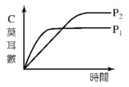

📝 範例 1：同位素交換反應
將 1.0 莫耳的醋酸溶於 10 毫升的重水中，試問在此溶液中會有哪些化合物存在？
📝 範例 2：總壓與平衡時間圖
平衡系 $\text{A}_{(g)} + 2\text{B}_{(g)} \rightleftharpoons \text{nC}_{(g)}$，n 為係數。定溫時在不同的總壓 $\text{P}_1$ 及 $\text{P}_2$ 其餘條件均不變下，$\text{C}$ 的莫耳數與時間的關係圖如右，則下列敘述何者正確？

📝 範例 3：產物莫耳數與溫度關係圖
反應之 $\text{aA}_{(g)} + \text{bB}_{(g)} \rightleftharpoons \text{cC}_{(g)} + \text{dD}_{(g)} \mathbf{+ Q\text{ kJ}}$，若 $a+b > c+d$，$\text{Q} < 0$，則以溫度為橫座標，以產物莫耳數為縱座標作圖，下列何圖正確？（$\text{P}_2 > \text{P}_1$）
📝 範例 4：莫耳分率與體積的綜合判斷
設 $\text{aA}_{(g)} + \text{bB}_{(g)} \rightleftharpoons \text{cC}_{(g)} + \text{dD}_{(g)}$ 於定容下，$\text{A}$ 在 $200^\circ\text{C}$ 之莫耳分率比在 $300^\circ\text{C}$ 為大；而使反應室體積增大時，$\text{A}$ 之莫耳數增加，則下列何者正確？
📝 範例 5：注射筒中的 $\text{NO}_2$ 平衡實驗
在 $25^\circ\text{C}$、$1\text{ atm}$ 時，$\text{N}_2\text{O}_{4(g)} \rightleftharpoons 2\text{NO}_{2(g)}$，$\Delta\text{H} > 0$，將達到平衡的混合氣體充入 $\text{A}$ 與 $\text{C}$ 兩支針筒，$\text{B}$ 針筒充入空氣，三筒壓力及體積均相同，下列敘述何者正確？
📝 範例 6：速率常數與平衡常數表
某反應 $\text{A}_{2(g)} \rightleftharpoons 2\text{A}_{(g)} + \text{熱}$，其中 $k$、$k'$ 依次表示正、逆反應之速率常數，$\text{K}$ 為平衡常數，若施予下列各項操作時，$k$、$k'$、$\text{K}$ 將成為 $pk$、$qk'$、$r\text{K}$，則下列各項，哪些正確？
| 選項 | 變因 | 結果 |
|---|---|---|
| (A) | 定溫定容加入 $\text{A}_{2(g)}$ | p=q=1 , r=1 |
| (B) | 定溫下壓縮體積 | p=q=1 , r<1 |
| (C) | 定溫定容加入 $\text{He}_{(g)}$ | q<p<1 , r=1 |
| (D) | 定容加熱 | q>p>1 , r<1 |
| (E) | 加催化劑 | p=q>1 , r=1 |
📝 範例 7：反應速率變化圖形判斷
平衡系 $\text{H}_{2(g)} + \text{I}_{2(g)} \rightleftharpoons 2\text{HI}_{(g)}$ 反應速率與時間之關係如下圖，圖中 $\text{R}_1$、$\text{R}_1'$ 代表正反應速率，$\text{R}_2$、$\text{R}_2'$ 代表逆反應速率。則在 $t_1$ 時，下列何種狀況改變，會使反應速率產生如右圖的變化？
（正逆速率等量同時升高，且維持相等）